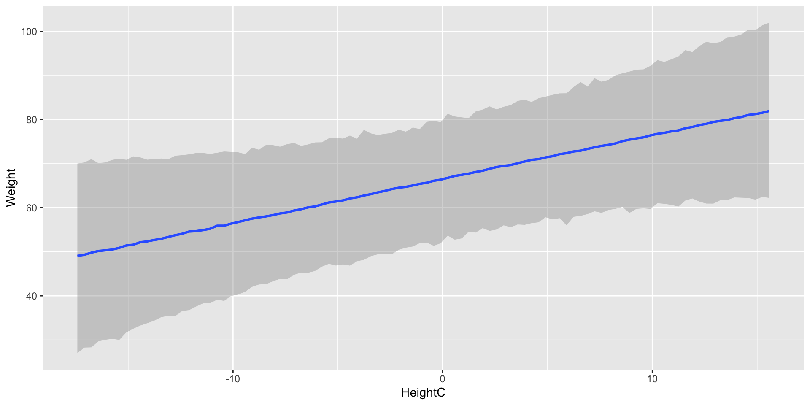
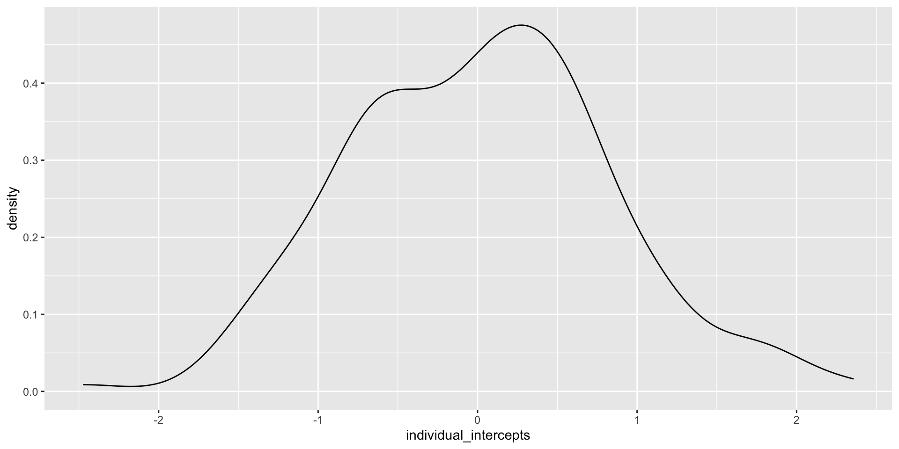
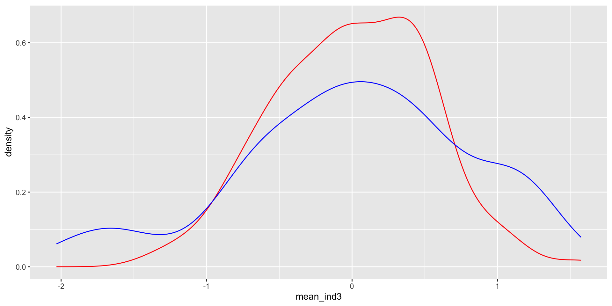

April 22, 2026
Today we will learn how to fit multilevel models in brms.
In previous labs, each parameter applied to everyone included in the model. However, this method ignores within-person variation.
To allow for individual differences, we can use multilevel modeling.
Instead of using a separate intercept for each observation, the multilevel approach uses teh method of partial pooling to model a distribution of intercepts.
To illustrate, let’s load in the TDF.csv data, along with the tidyverse and brms packages.
Previously:
\[\omega_i \sim Normal (\mu_i, \sigma)\]
\[\mu_i = a + b \times hc_i\]
\(a \sim N(66.5, 2)\)
\(b \sim N(1, .5)\)
\(\sigma \sim Exp(.25)\)
Now:
\[\omega_i \sim Normal (\mu_i, \sigma)\]
\[\mu_i = a + b \times hc_i\] \(a \sim N(\bar{a}, \sigma_a)\)
\(\bar{a} \sim N(66.5, 2)\)
\(\sigma_a \sim ???\)
\(b \sim N(1, .5)\)
\(\sigma \sim Exp(.25)\)
We can allow for random intercepts using the (1 | ID) syntax, where ID is the clustering variable.
lmer and glmer for multilevel models.For our height and weight example, our formula looks like this:
Use get_prior to see how parameters are represented.
prior class coef group resp dpar nlpar lb ub tag
(flat) b
(flat) b HeightC
student_t(3, 70, 7.4) Intercept
student_t(3, 0, 7.4) sd 0
student_t(3, 0, 7.4) sd Name 0
student_t(3, 0, 7.4) sd Intercept Name 0
student_t(3, 0, 7.4) sigma 0
source
default
(vectorized)
default
default
(vectorized)
(vectorized)
defaultAs we see in the class column, we have a new parameter class labelled sd. This is the prior for the standard deviation of intercepts.
Recall: intercept = predicted weight for average height
We may expect some individual variability. We will try an Exponential(.5).
Our choice of sd prior affects the width of the band of predicted observations, so we want to make sure this makes sense.
method = "posterior_predict": plot the distribution of predicted observations
re_formula = NULL: include all cluster effects

Notice that even for this relatively simple multilevel model, estimation is not as efficient as with other models. We need to be cautious to run enough iterations for the inferences we want.
Family: gaussian
Links: mu = identity
Formula: Weight ~ HeightC + (1 | Name)
Data: d1 (Number of observations: 179)
Draws: 4 chains, each with iter = 2000; warmup = 1000; thin = 1;
total post-warmup draws = 4000
Multilevel Hyperparameters:
~Name (Number of levels: 179)
Estimate Est.Error l-95% CI u-95% CI Rhat Bulk_ESS Tail_ESS
sd(Intercept) 1.60 1.20 0.05 4.24 1.06 103 79
Regression Coefficients:
Estimate Est.Error l-95% CI u-95% CI Rhat Bulk_ESS Tail_ESS
Intercept 69.31 0.35 68.62 70.00 1.00 2459 2011
HeightC 0.78 0.05 0.67 0.89 1.00 2900 2628
Further Distributional Parameters:
Estimate Est.Error l-95% CI u-95% CI Rhat Bulk_ESS Tail_ESS
sigma 4.38 0.71 2.37 5.25 1.06 108 73
Draws were sampled using sampling(NUTS). For each parameter, Bulk_ESS
and Tail_ESS are effective sample size measures, and Rhat is the potential
scale reduction factor on split chains (at convergence, Rhat = 1).\(\bar{a}\) is the overall mean intercept.
The random effects (ranef) are individuals’ deviations from the mean intercept.

Let’s now look at the more complicated langauge.csv example from lecture.
We want to estimate index variables for both task type and learning group type, and we want individuals to have random intercepts.
Remember that we fit a multilevel binomial model for these data.
prior class coef group resp dpar nlpar lb ub
(flat) b a
(flat) b factortasktypePSTps a
(flat) b factortasktypesGJTG a
(flat) b factortasktypesGJTU a
(flat) b factortasktypewGJTG a
(flat) b factortasktypewGJTU a
(flat) b b
(flat) b factorgroupclassroom b
(flat) b factorgroupimmersion b
(flat) b factorgroupnative b
(flat) b c
(flat) b Intercept c
student_t(3, 0, 2.5) sd c 0
student_t(3, 0, 2.5) sd ID c 0
student_t(3, 0, 2.5) sd Intercept ID c 0
tag source
default
(vectorized)
(vectorized)
(vectorized)
(vectorized)
(vectorized)
default
(vectorized)
(vectorized)
(vectorized)
default
(vectorized)
default
(vectorized)
(vectorized)It is a long list, but we can simplify matters by specifying the same priors for each set of index variables. There is no need to specify priors for each coef (unless you want to!). Here, we use the priors from lecture.
Family: binomial
Links: mu = logit
Formula: sumscore | trials(nitems) ~ a + b + c
a ~ 0 + factor(tasktype)
b ~ 0 + factor(group)
c ~ (1 | ID)
Data: d2 (Number of observations: 675)
Draws: 4 chains, each with iter = 2000; warmup = 1000; thin = 1;
total post-warmup draws = 4000
Multilevel Hyperparameters:
~ID (Number of levels: 135)
Estimate Est.Error l-95% CI u-95% CI Rhat Bulk_ESS Tail_ESS
sd(c_Intercept) 0.57 0.04 0.49 0.66 1.00 1258 2067
Regression Coefficients:
Estimate Est.Error l-95% CI u-95% CI Rhat Bulk_ESS
a_factortasktypePSTps 0.82 0.21 0.43 1.25 1.00 892
a_factortasktypesGJTG -0.36 0.21 -0.77 0.06 1.00 902
a_factortasktypesGJTU -0.94 0.21 -1.34 -0.52 1.00 906
a_factortasktypewGJTG 0.83 0.21 0.42 1.24 1.00 914
a_factortasktypewGJTU -0.65 0.21 -1.05 -0.23 1.00 915
b_factorgroupclassroom -0.47 0.27 -1.00 0.05 1.00 1123
b_factorgroupimmersion -0.36 0.27 -0.88 0.17 1.00 1220
b_factorgroupnative 0.57 0.27 0.05 1.11 1.00 1376
c_Intercept 2.72 0.30 2.14 3.30 1.00 1176
Tail_ESS
a_factortasktypePSTps 1477
a_factortasktypesGJTG 1488
a_factortasktypesGJTU 1543
a_factortasktypewGJTG 1634
a_factortasktypewGJTU 1560
b_factorgroupclassroom 2070
b_factorgroupimmersion 2083
b_factorgroupnative 2137
c_Intercept 2077
Draws were sampled using sampling(NUTS). For each parameter, Bulk_ESS
and Tail_ESS are effective sample size measures, and Rhat is the potential
scale reduction factor on split chains (at convergence, Rhat = 1).Extracting “fixed effects” give the index variable values and the mean intercept.
Estimate Est.Error l-95% CI u-95% CI Rhat
a_factortasktypePSTps 0.8248510 0.2105227 0.42651859 1.24507633 1.002714
a_factortasktypesGJTG -0.3597669 0.2100723 -0.76599839 0.06188839 1.003343
a_factortasktypesGJTU -0.9351852 0.2078960 -1.33581482 -0.51846720 1.001721
a_factortasktypewGJTG 0.8333881 0.2133679 0.41754674 1.24393686 1.003012
a_factortasktypewGJTU -0.6511101 0.2096881 -1.04657847 -0.22571218 1.003068
b_factorgroupclassroom -0.4749283 0.2679497 -1.00193283 0.04929519 1.002504
b_factorgroupimmersion -0.3638056 0.2689497 -0.87823943 0.16656626 1.004076
b_factorgroupnative 0.5656191 0.2699531 0.04513435 1.10751054 1.004396
c_Intercept 2.7237308 0.2951156 2.14365917 3.29553734 1.001424
Bulk_ESS Tail_ESS
a_factortasktypePSTps 891.5321 1476.954
a_factortasktypesGJTG 901.6317 1488.241
a_factortasktypesGJTU 906.0604 1543.274
a_factortasktypewGJTG 913.7975 1633.695
a_factortasktypewGJTU 914.8988 1560.054
b_factorgroupclassroom 1122.9252 2069.552
b_factorgroupimmersion 1219.5048 2083.424
b_factorgroupnative 1376.0904 2136.550
c_Intercept 1176.4691 2077.206“Random effects” gives the standard deviation of the random intercepts.
We can set multiple types of random effects. For example, we could consider the random effects of both persons and items.
For example:
Now, we can set separate sd parameters for two different group values: ID and item:
prior class coef group resp dpar nlpar lb ub tag
(flat) b a
(flat) b tasktypePST a
(flat) b tasktypesGJT a
(flat) b tasktypewGJT a
(flat) b b
(flat) b groupclassroom b
(flat) b groupimmersion b
(flat) b groupnative b
(flat) b c
(flat) b Intercept c
student_t(3, 0, 2.5) sd c 0
student_t(3, 0, 2.5) sd ID c 0
student_t(3, 0, 2.5) sd Intercept ID c 0
student_t(3, 0, 2.5) sd d 0
student_t(3, 0, 2.5) sd item d 0
student_t(3, 0, 2.5) sd Intercept item d 0
source
default
(vectorized)
(vectorized)
(vectorized)
default
(vectorized)
(vectorized)
(vectorized)
default
(vectorized)
default
(vectorized)
(vectorized)
default
(vectorized)
(vectorized)Again, we’ll use the same priors that we did in lecture.
The following model takes much longer to run: BE WARNED!!!
Estimate Est.Error l-95% CI u-95% CI Rhat Bulk_ESS
a_tasktypePST 0.8905764 0.2864310 0.3347916 1.4485608 1.000841 1032.1072
a_tasktypesGJT -0.7799037 0.2792972 -1.3228651 -0.2268620 1.004901 798.0612
a_tasktypewGJT -0.1834278 0.2805797 -0.7330884 0.3735645 1.004465 809.4352
b_groupclassroom -0.3887892 0.2691449 -0.9066137 0.1326564 1.000826 1077.1807
b_groupimmersion -0.2902237 0.2691611 -0.8097091 0.2479520 1.002052 1132.0841
b_groupnative 0.6625639 0.2726513 0.1327727 1.1950388 1.001842 1060.2219
c_Intercept 2.9591896 0.3368576 2.3023243 3.6300196 1.000969 1000.2321
Tail_ESS
a_tasktypePST 1892.626
a_tasktypesGJT 1445.545
a_tasktypewGJT 1460.532
b_groupclassroom 1870.530
b_groupimmersion 1559.505
b_groupnative 1662.193
c_Intercept 1819.200$ID
Estimate Est.Error l-95% CI u-95% CI Rhat Bulk_ESS
sd(c_Intercept) 0.5913394 0.04585747 0.5061146 0.6846673 1.002078 731.7302
Tail_ESS
sd(c_Intercept) 1182.367
$item
Estimate Est.Error l-95% CI u-95% CI Rhat Bulk_ESS
sd(d_Intercept) 0.9089113 0.08004416 0.7651827 1.082432 1.00535 442.3937
Tail_ESS
sd(d_Intercept) 1212.093As we can see, the variation of items is much larger than the variation of individuals!

Modify m3 so that items are treated as a fixed effect rather than a random effect. Compare the output to that of m3.
Modify m2 so that tasktype is a random effect rather than a fixed effect. How does this affect model run time and convergence? How does this affect the interpretations that you make?